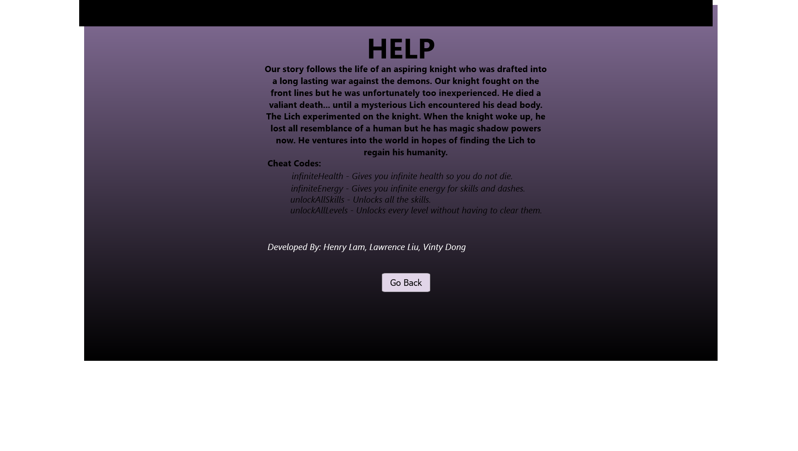
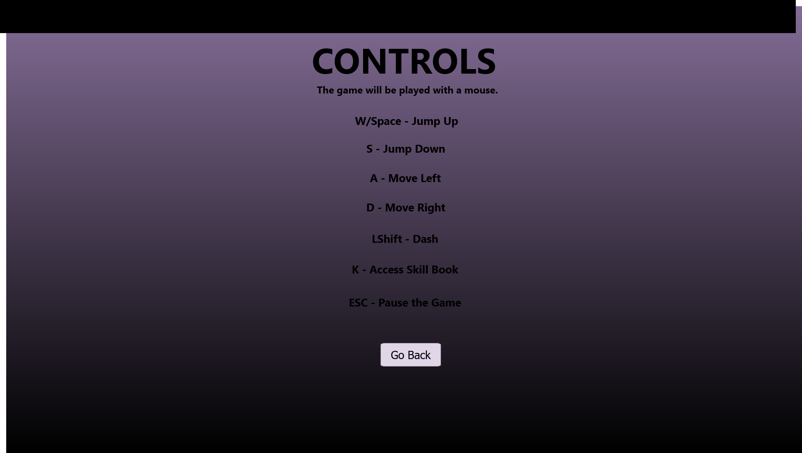
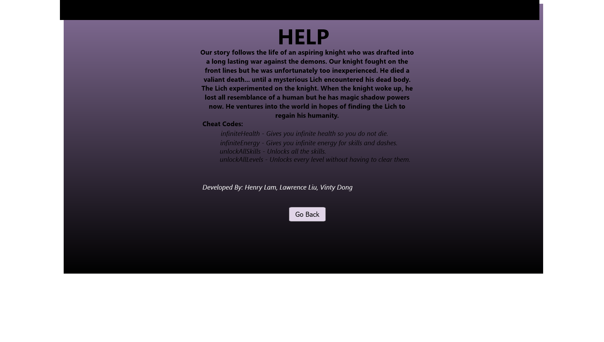
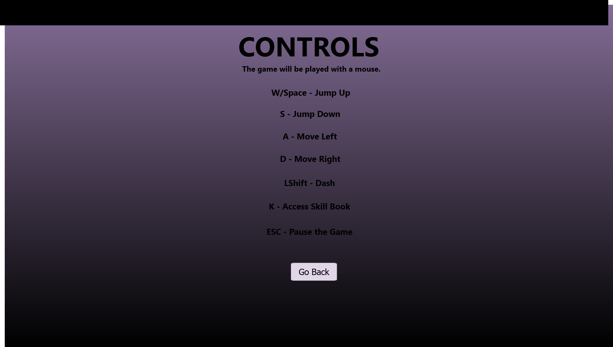

Game Design Document
Henry Lam, Lawrence Liu, Vinty Dong
Introduction
This document describes a game called "Shadow Knight", which is designed to be an adventure RPG, 2D side-scroller. The game will include basic techniques for 2D games such as tiled backgrounds, collision detection, physics, AI, efficient memory management by using the Wolfie 2D engine.
Technology
The game will be developed as a TypeScript application using the Wolfie2D game engine. WebGL will be used as the underlying rendering technology.
Back Story
Our story follows the life of an aspiring knight who was drafted into a long lasting war against the demons. Our knight fought on the front lines but he was unfortunately too inexperienced. He died a valiant death... until a mysterious Lich encountered his dead body. The Lich did some stuff and experimented on the knight. When the knight woke up, he lost all resemblance of a human but he has magic shadow powers now. He ventures into the world in hopes of finding the Lich to regain his humanity.
Objective
The Shadow Knight's objective is to survive in an unknown land. With his newfound powers and a fragile body, he must eliminate enemies and escape to reach the Lich.
Gameplay
The game is a mix of side-scroller and platformer in which the main objective of each level is to kill all enemies before proceeding to the next level.
Each level is either a training level or a boss level. In the training levels,
the player can kill enemies for rewards in the form of experience and skill points. These levels are meant to be used as preparation for
the boss fight. The boss level will contain puzzles that the player must solve in order to reach the boss.
Once within the boss area, players can no longer change their loadout. Preparation should be made before entering the boss level.
The player will have the choice of selecting skills and upgrades immediately before the boss fight. Random modifiers and effects to the
level may be applied to encourage different skill builds. Depending on the random modifier, some skills may be more effective for a
particular level than others.
Controls
The game will be played using both a keyboard and mouse. Following are the keybindings:
| Key | Function |
|---|---|
| W, Space | Jump Up |
| A | Move Left |
| S | Jump Down |
| D | Move Right |
| Left Shift | Dash |
| U,I,O,P | Use Skills (1-4) |
| K | Access Skill Book |
| ESC | Pause the game |
Graphical User Interface
All GUI components include the following
- Splash Screen - The splash screen GUI simply presents a game logo and temps the user to proceed.
- Main Menu - After the splash screen is clicked, the main menu provides options to start the game:
- Play - If pressed, create a new game starting from the beginning.
- Choose Level - If pressed, the game will display an level selection screen.
- Controls - If pressed, the game will display an info screen that includes a description of all the game controls.
- Help - If pressed, the game will display an info screen with information about the backstory, game authors, and cheat codes.
- Levels Selection Screen - If pressed, the game will display an level selection screen.
- Controls Screen - If pressed, the game will display an info screen that includes a description of all the game controls.
- Help Screen - If pressed, the game will display an info screen with information about the backstory, game authors, and cheat codes.
- In-Game Menu - While the game is in progress, we'll always have a game menu that allows the player to pause the game and select from the following options:
- New Game - If a game is in progress, first we'll pop up a dialog to make sure the user really wants to quit the current game. If we conclude the user really wants to start a game, then the game state is reset and begun.
- Display Controls - If pressed, the game will display an info screen that includes a description of all game controls.
- About - If pressed, the game will display an info screen with information about the game authors.
- Exit - If pressed, the game program will exit and the player is returned to the splash screen.
- Skill Book - While the game in progress, the skill book allows the player to view and upgrade their skills.
- In-Game GUI - Once a game starts, the following will be displayed at all times:
- Health Bar
- Shadow Bar
- Currency Count
Preliminary Mockups for GUI components

 





Artwork
The following needs to be created:
- Shadow Knight - A knight that requires animations for:
- Walking Left
- Walking Right
- Jumping Up
- Dashing Left
- Dashing Right
- Attacking Left
- Attacking Right
- Taking Damage
- Dying
- Melee, Ranged, Flying & Boss Enemies - Enemy sprites, each require animations for:
- Walking Left
- Walking Right
- Attacking Left
- Attacking Right
- Taking Damage
- Dying
- Exit Door - Each level will have an exit door that lets them advance to the next level after completing the current level.
- Floor & Wall Tiles - Training and boss levels will have collidable walls and walkable platforms.
- Chamber Background Tiles - Our level backgrounds will be made with non-collidable tiles.
Sound Effects
All sound effects will be original. Sounds will be made to coincide with each of the following events:
- Walking
- Jumping
- Dashing
- Attacking
- Enemy Attacking
- Taking Damage
- Dying
- Level Clear
Music
There will be background music for the game. If time permits, there may be music for each level.